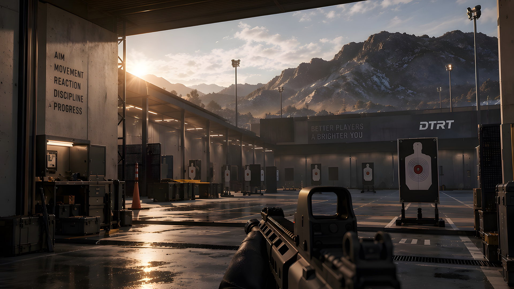

Añasco
West-coast start. Gabriel’s shop. Story still. Inspired west coast, original block — no copied landmark as a fortress.
Story stillWorld
Fiction, 2032. Municipalities are real. Interiors, contractors, and the service network are invented. Do not treat this page as a list of finished levels.
West-coast start. Gabriel’s shop. Story still. Inspired west coast, original block — no copied landmark as a fortress.
Story still
Street and a door that records a family. Not a playable city.
Story still
Dry southwest light. Scenes sit outside protected habitat.
Story still
Workshop over a kitchen. Ordinary household, not a tourist copy.
Story still
Fictional compound on a real coast. Quiet is information.
Story still
Internal 12 m lane. This is the playable slice. It is not the island.
In productionAguadilla, Humacao, Utuado, and San Juan appear on the Volume One route as story geography. They are not shipped maps.